Estadísticas del servidor Web de idecocasa.com
Estadísticas del servidor Web de idecocasa.com
Programa iniciado a las Mar/13/Jun/2023 8:00 pm.
Análisis de peticiones del Sáb/15/Abr/2023 10:51 pm al Mar/13/Jun/2023 4:48 am (58.25 días).
Estadísticas del servidor Web de idecocasa.comPrograma iniciado a las Mar/13/Jun/2023 8:00 pm.
Análisis de peticiones del Sáb/15/Abr/2023 10:51 pm al Mar/13/Jun/2023 4:48 am (58.25 días).
(Ir a: Arriba | Resumen general | Informe mensual | Resumen diario | Resumen horario | Informe de dominios | Informe de organización | Informe de remitentes redirecionados | Informe de errores de remitentes | Informe de sitios remitentes | Informe de navegadores | Resumen de navegadores | Informe de Sistemas Operativos | Informe de códigos de estado | Informe de tamaño de archivos | Informe de Tipos de Archivo | Informe de Directorios | Informe de peticiones)
Los números entre paréntesis se refieren a 7 días al 13/Jun/2023 8:00 pm.
Peticiones exitosas: 1,159 (0)
Promedio de peticiones exitosas por día: 19
Peticiones exitosas por página: 35 (0)
Peticiones no logradas: 84 (0)
Peticiones redireccionadas: 895 (6)
Archivos diferentes solicitados: 789 (984)
Sistemas diferentes atendidos: 52 (518)
Transferencia total: 18.14 megabytes (0 bytes)
Promedio de transferencia por día: 318.86 kilobytes (0 bytes)
(Ir a: Arriba | Resumen general | Informe mensual | Resumen diario | Resumen horario | Informe de dominios | Informe de organización | Informe de remitentes redirecionados | Informe de errores de remitentes | Informe de sitios remitentes | Informe de navegadores | Resumen de navegadores | Informe de Sistemas Operativos | Informe de códigos de estado | Informe de tamaño de archivos | Informe de Tipos de Archivo | Informe de Directorios | Informe de peticiones)
Cada unidad ( ) representa 1 petición de una página.
) representa 1 petición de una página.
| mes | No. pet. | Págs. | |
|---|---|---|---|
| Abr 2023 | 1076 | 35 |   |
| May 2023 | 83 | 0 |
Mes de mayor tráfico: Abr 2023 (35 peticiones por páginas).
(Ir a: Arriba | Resumen general | Informe mensual | Resumen diario | Resumen horario | Informe de dominios | Informe de organización | Informe de remitentes redirecionados | Informe de errores de remitentes | Informe de sitios remitentes | Informe de navegadores | Resumen de navegadores | Informe de Sistemas Operativos | Informe de códigos de estado | Informe de tamaño de archivos | Informe de Tipos de Archivo | Informe de Directorios | Informe de peticiones)
Cada unidad () representa 1 petición de una página.
| día | No. pet. | Págs. | |
|---|---|---|---|
| Dom | 48 | 0 | |
| Lun | 83 | 0 | |
| Mar | 151 | 0 | |
| Mié | 45 | 0 | |
| Jue | 42 | 0 | |
| Vie | 38 | 0 | |
| Sáb | 752 | 35 | |
(Ir a: Arriba | Resumen general | Informe mensual | Resumen diario | Resumen horario | Informe de dominios | Informe de organización | Informe de remitentes redirecionados | Informe de errores de remitentes | Informe de sitios remitentes | Informe de navegadores | Resumen de navegadores | Informe de Sistemas Operativos | Informe de códigos de estado | Informe de tamaño de archivos | Informe de Tipos de Archivo | Informe de Directorios | Informe de peticiones)
Cada unidad () representa 1 petición de una página.
| hr | No. pet. | Págs. | |
|---|---|---|---|
| 0 | 17 | 0 | |
| 1 | 14 | 0 | |
| 2 | 19 | 0 | |
| 3 | 10 | 0 | |
| 4 | 135 | 0 | |
| 5 | 12 | 0 | |
| 6 | 17 | 0 | |
| 7 | 8 | 0 | |
| 8 | 14 | 0 | |
| 9 | 14 | 0 | |
| 10 | 26 | 0 | |
| 11 | 12 | 0 | |
| 12 | 18 | 0 | |
| 13 | 7 | 0 | |
| 14 | 14 | 0 | |
| 15 | 11 | 0 | |
| 16 | 11 | 0 | |
| 17 | 10 | 0 | |
| 18 | 29 | 0 | |
| 19 | 8 | 0 | |
| 20 | 5 | 0 | |
| 21 | 8 | 0 | |
| 22 | 84 | 11 |  |
| 23 | 656 | 24 |  |
(Ir a: Arriba | Resumen general | Informe mensual | Resumen diario | Resumen horario | Informe de dominios | Informe de organización | Informe de remitentes redirecionados | Informe de errores de remitentes | Informe de sitios remitentes | Informe de navegadores | Resumen de navegadores | Informe de Sistemas Operativos | Informe de códigos de estado | Informe de tamaño de archivos | Informe de Tipos de Archivo | Informe de Directorios | Informe de peticiones)
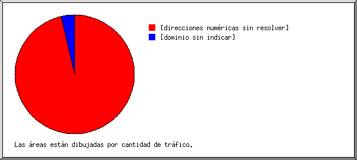
Listado de los dominios, ordenados por cantidad de tráfico.
| No. pet. | %bytes | dominio |
|---|---|---|
| 755 | 96.37% | [direcciones numéricas sin resolver] |
| 404 | 3.63% | [dominio sin indicar] |
(Ir a: Arriba | Resumen general | Informe mensual | Resumen diario | Resumen horario | Informe de dominios | Informe de organización | Informe de remitentes redirecionados | Informe de errores de remitentes | Informe de sitios remitentes | Informe de navegadores | Resumen de navegadores | Informe de Sistemas Operativos | Informe de códigos de estado | Informe de tamaño de archivos | Informe de Tipos de Archivo | Informe de Directorios | Informe de peticiones)
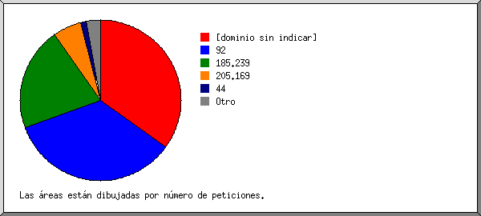
Listado de las organizaciones, ordenadas por número de peticiones.
| No. pet. | %bytes | organización |
|---|---|---|
| 404 | 3.63% | [dominio sin indicar] |
| 400 | 53.57% | 92 |
| 243 | 34.74% | 185.239 |
| 66 | 4.26% | 205.169 |
| 14 | 2.50% | 44 |
| 10 | 0.51% | 65.154 |
| 8 | 0.39% | 178.211 |
| 5 | 0.12% | 116 |
| 2 | 0.28% | 192.0 |
| 1 | 67.205 | |
| 1 | 0.01% | 8 |
| 1 | 78 | |
| 1 | 79 | |
| 1 | 93 | |
| 1 | 170.64 | |
| 1 | 31 |
(Ir a: Arriba | Resumen general | Informe mensual | Resumen diario | Resumen horario | Informe de dominios | Informe de organización | Informe de remitentes redirecionados | Informe de errores de remitentes | Informe de sitios remitentes | Informe de navegadores | Resumen de navegadores | Informe de Sistemas Operativos | Informe de códigos de estado | Informe de tamaño de archivos | Informe de Tipos de Archivo | Informe de Directorios | Informe de peticiones)
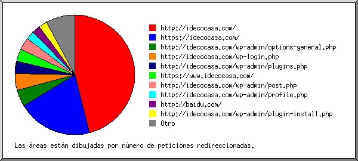
Listado de los URLs remitentes, ordenados por número de peticiones redireccionadas.
(Ir a: Arriba | Resumen general | Informe mensual | Resumen diario | Resumen horario | Informe de dominios | Informe de organización | Informe de remitentes redirecionados | Informe de errores de remitentes | Informe de sitios remitentes | Informe de navegadores | Resumen de navegadores | Informe de Sistemas Operativos | Informe de códigos de estado | Informe de tamaño de archivos | Informe de Tipos de Archivo | Informe de Directorios | Informe de peticiones)
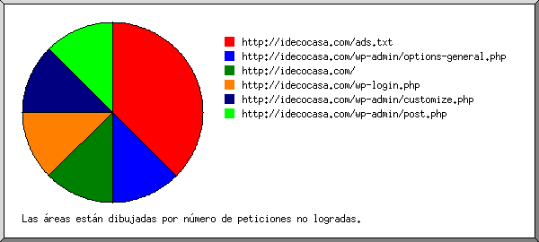
Listado de los URLs de remitentes, ordenados por número de peticiones no logradas.
(Ir a: Arriba | Resumen general | Informe mensual | Resumen diario | Resumen horario | Informe de dominios | Informe de organización | Informe de remitentes redirecionados | Informe de errores de remitentes | Informe de sitios remitentes | Informe de navegadores | Resumen de navegadores | Informe de Sistemas Operativos | Informe de códigos de estado | Informe de tamaño de archivos | Informe de Tipos de Archivo | Informe de Directorios | Informe de peticiones)
Listado de los sitios remitentes, ordenados por número de peticiones.
| No. pet. | sitio |
|---|---|
| 646 | http://idecocasa.com/ |
(Ir a: Arriba | Resumen general | Informe mensual | Resumen diario | Resumen horario | Informe de dominios | Informe de organización | Informe de remitentes redirecionados | Informe de errores de remitentes | Informe de sitios remitentes | Informe de navegadores | Resumen de navegadores | Informe de Sistemas Operativos | Informe de códigos de estado | Informe de tamaño de archivos | Informe de Tipos de Archivo | Informe de Directorios | Informe de peticiones)
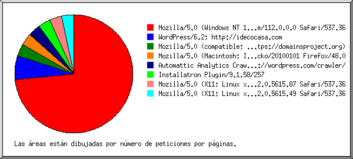
Listado de los navegadores que representan, por lo menos, 1 petición de una página, ordenados por número de peticiones por páginas.
| No. pet. | Págs. | Navegador |
|---|---|---|
| 643 | 22 | Mozilla/5.0 (Windows NT 10.0; Win64; x64) AppleWebKit/537.36 (KHTML, like Gecko) Chrome/112.0.0.0 Safari/537.36 |
| 9 | 2 | WordPress/6.2; http://idecocasa.com |
| 1 | 1 | Mozilla/5.0 (compatible; Domains Project/1.3.7; +https://domainsproject.org) |
| 1 | 1 | Mozilla/5.0 (Macintosh; Intel Mac OS X 10.11; rv:48.0) Gecko/20100101 Firefox/48.0 |
| 1 | 1 | Automattic Analytics Crawler/0.2; http://wordpress.com/crawler/ |
| 29 | 1 | Installatron Plugin/9.1.58/257 |
| 14 | 1 | Mozilla/5.0 (X11; Linux x86_64) AppleWebKit/537.36 (KHTML, like Gecko) Chrome/112.0.5615.87 Safari/537.36 |
| 5 | 1 | Mozilla/5.0 (X11; Linux x86_64) AppleWebKit/537.36 (KHTML, like Gecko) HeadlessChrome/112.0.5615.49 Safari/537.36 |
| 451 | 0 | [no listados: 14 Navegadores] |
(Ir a: Arriba | Resumen general | Informe mensual | Resumen diario | Resumen horario | Informe de dominios | Informe de organización | Informe de remitentes redirecionados | Informe de errores de remitentes | Informe de sitios remitentes | Informe de navegadores | Resumen de navegadores | Informe de Sistemas Operativos | Informe de códigos de estado | Informe de tamaño de archivos | Informe de Tipos de Archivo | Informe de Directorios | Informe de peticiones)
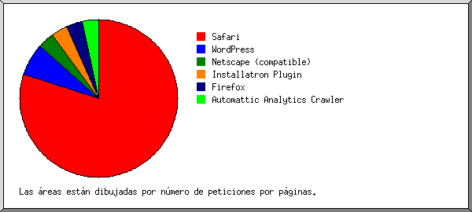
Listado de los navegadores que representan, por lo menos, 1 petición de una página, ordenados por número de peticiones por páginas.
| no. | No. pet. | Págs. | Navegador |
|---|---|---|---|
| 1 | 743 | 24 | Safari |
| 742 | 24 | Safari/537 | |
| 2 | 332 | 2 | WordPress |
| 332 | 2 | WordPress/6 | |
| 3 | 4 | 1 | Netscape (compatible) |
| 4 | 29 | 1 | Installatron Plugin |
| 29 | 1 | Installatron Plugin/9 | |
| 5 | 34 | 1 | Firefox |
| 1 | 1 | Firefox/48 | |
| 6 | 1 | 1 | Automattic Analytics Crawler |
| 1 | 1 | Automattic Analytics Crawler/0 | |
| 11 | 0 | [no listados: 2 Navegadores] |
(Ir a: Arriba | Resumen general | Informe mensual | Resumen diario | Resumen horario | Informe de dominios | Informe de organización | Informe de remitentes redirecionados | Informe de errores de remitentes | Informe de sitios remitentes | Informe de navegadores | Resumen de navegadores | Informe de Sistemas Operativos | Informe de códigos de estado | Informe de tamaño de archivos | Informe de Tipos de Archivo | Informe de Directorios | Informe de peticiones)
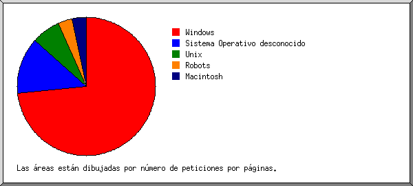
Listado de los sistemas operativos, ordenados por número de peticiones por páginas.
| no. | No. pet. | Págs. | SO |
|---|---|---|---|
| 1 | 710 | 22 | Windows |
| 670 | 22 | Windows NT | |
| 40 | 0 | Windows desconocido | |
| 2 | 376 | 4 | Sistema Operativo desconocido |
| 3 | 32 | 2 | Unix |
| 32 | 2 | Linux | |
| 4 | 1 | 1 | Robots |
| 5 | 35 | 1 | Macintosh |
(Ir a: Arriba | Resumen general | Informe mensual | Resumen diario | Resumen horario | Informe de dominios | Informe de organización | Informe de remitentes redirecionados | Informe de errores de remitentes | Informe de sitios remitentes | Informe de navegadores | Resumen de navegadores | Informe de Sistemas Operativos | Informe de códigos de estado | Informe de tamaño de archivos | Informe de Tipos de Archivo | Informe de Directorios | Informe de peticiones)
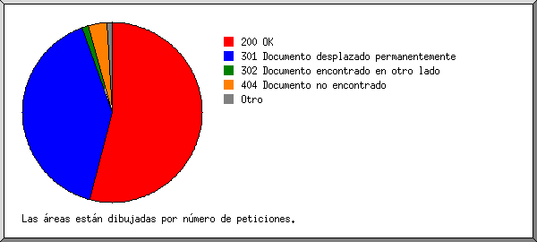
Listado de los códigos de estado, por orden numérico.
| No. pet. | cód. de estado |
|---|---|
| 1153 | 200 OK |
| 867 | 301 Documento desplazado permanentemente |
| 28 | 302 Documento encontrado en otro lado |
| 6 | 304 Sin modificar desde el último acceso |
| 2 | 400 petición incorrecta |
| 5 | 403 Acceso prohibido |
| 72 | 404 Documento no encontrado |
| 5 | 503 Servicio no disponible temporalmente |
(Ir a: Arriba | Resumen general | Informe mensual | Resumen diario | Resumen horario | Informe de dominios | Informe de organización | Informe de remitentes redirecionados | Informe de errores de remitentes | Informe de sitios remitentes | Informe de navegadores | Resumen de navegadores | Informe de Sistemas Operativos | Informe de códigos de estado | Informe de tamaño de archivos | Informe de Tipos de Archivo | Informe de Directorios | Informe de peticiones)
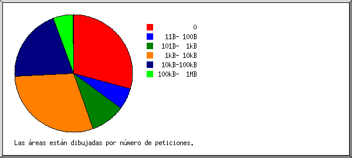
| tamaño | No. pet. | %bytes |
|---|---|---|
| 0 | 339 | |
| 1B- 10B | 1 | |
| 11B- 100B | 68 | 0.02% |
| 101B- 1kB | 109 | 0.32% |
| 1kB- 10kB | 344 | 7.15% |
| 10kB-100kB | 235 | 34.99% |
| 100kB- 1MB | 63 | 57.53% |
(Ir a: Arriba | Resumen general | Informe mensual | Resumen diario | Resumen horario | Informe de dominios | Informe de organización | Informe de remitentes redirecionados | Informe de errores de remitentes | Informe de sitios remitentes | Informe de navegadores | Resumen de navegadores | Informe de Sistemas Operativos | Informe de códigos de estado | Informe de tamaño de archivos | Informe de Tipos de Archivo | Informe de Directorios | Informe de peticiones)
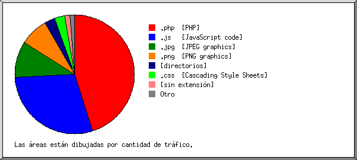
Listado de las extensiones que representan, por lo menos, 0.1% del tráfico, ordenadas por cantidad de tráfico.
| No. pet. | %bytes | extensión |
|---|---|---|
| 583 | 45.05% | .php [PHP] |
| 350 | 29.05% | .js [JavaScript code] |
| 38 | 9.93% | .jpg [JPEG graphics] |
| 18 | 7.71% | .png [PNG graphics] |
| 35 | 2.89% | [directorios] |
| 80 | 2.66% | .css [Cascading Style Sheets] |
| 38 | 1.56% | [sin extensión] |
| 2 | 0.81% | .woff2 |
| 6 | 0.28% | .gif [GIF graphics] |
| 9 | 0.06% | [no listadas: 3 extensiones] |
(Ir a: Arriba | Resumen general | Informe mensual | Resumen diario | Resumen horario | Informe de dominios | Informe de organización | Informe de remitentes redirecionados | Informe de errores de remitentes | Informe de sitios remitentes | Informe de navegadores | Resumen de navegadores | Informe de Sistemas Operativos | Informe de códigos de estado | Informe de tamaño de archivos | Informe de Tipos de Archivo | Informe de Directorios | Informe de peticiones)
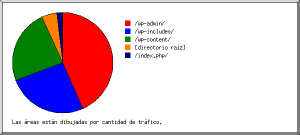
Listado de los directorios que representan, por lo menos, 0.01% del tráfico, ordenados por cantidad de tráfico.
| No. pet. | %bytes | directorio |
|---|---|---|
| 254 | 43.35% | /wp-admin/ |
| 283 | 25.95% | /wp-includes/ |
| 153 | 23.91% | /wp-content/ |
| 418 | 4.95% | [directorio raíz] |
| 38 | 1.84% | /index.php/ |
| 13 | [no listados: 1 directorio] |
(Ir a: Arriba | Resumen general | Informe mensual | Resumen diario | Resumen horario | Informe de dominios | Informe de organización | Informe de remitentes redirecionados | Informe de errores de remitentes | Informe de sitios remitentes | Informe de navegadores | Resumen de navegadores | Informe de Sistemas Operativos | Informe de códigos de estado | Informe de tamaño de archivos | Informe de Tipos de Archivo | Informe de Directorios | Informe de peticiones)
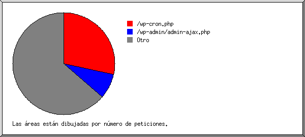
Listado de los archivos que representan, por lo menos, 20 peticiones, ordenados por número de peticiones.
| No. pet. | %bytes | última hora | archivo |
|---|---|---|---|
| 329 | 6/May/2023 3:43 pm | /wp-cron.php | |
| 92 | 22.44% | 15/Abr/2023 11:22 pm | /wp-admin/admin-ajax.php |
| 19 | 4.34% | 15/Abr/2023 11:21 pm | /wp-admin/admin-ajax.php?action=cp_load_data&filter=headers&mesmerize_skip_customize_register=true |
| 19 | 12.15% | 15/Abr/2023 11:21 pm | /wp-admin/admin-ajax.php?action=cp_load_data&filter=sections&mesmerize_skip_customize_register=true |
| 738 | 77.56% | 6/May/2023 4:57 pm | [no listados: 413 archivos] |